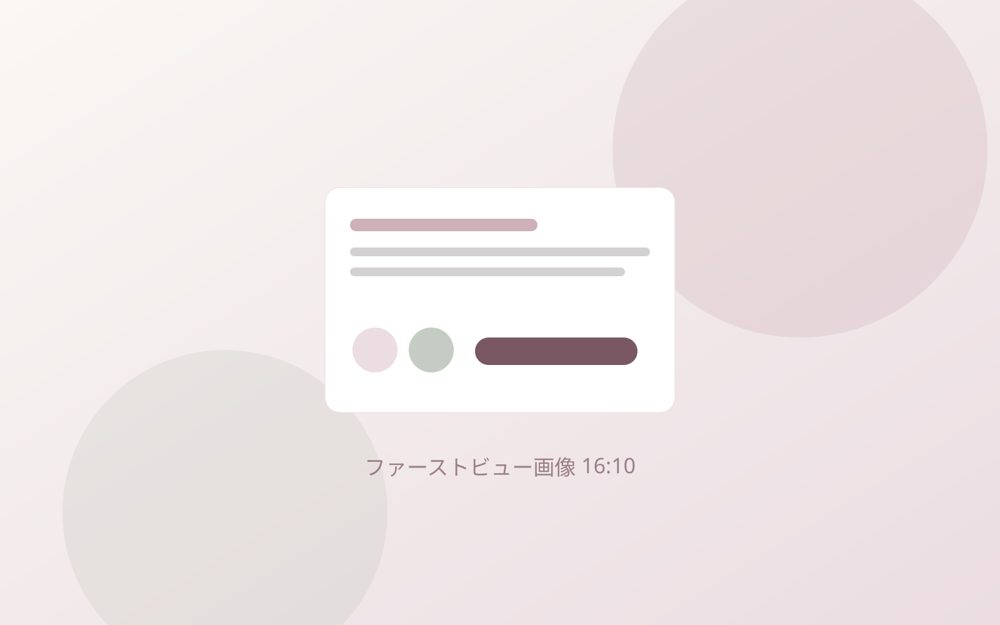
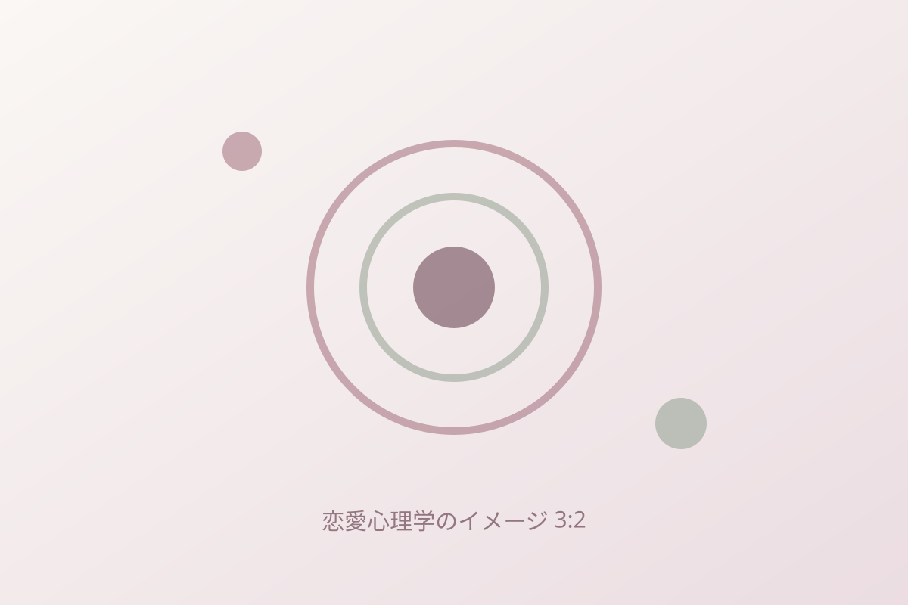
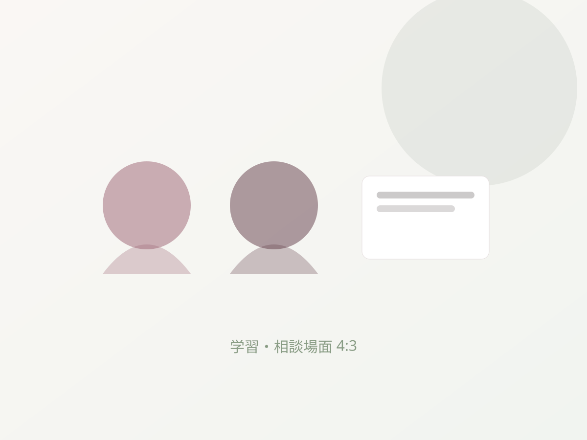
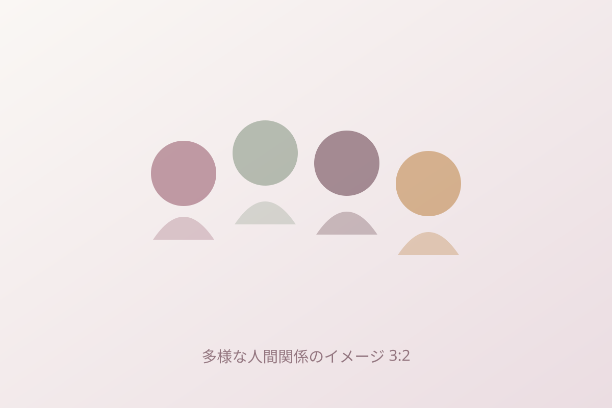
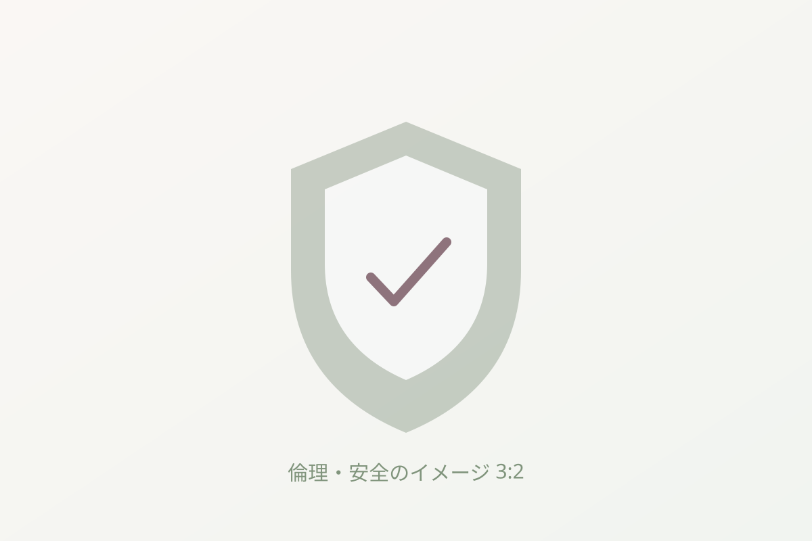
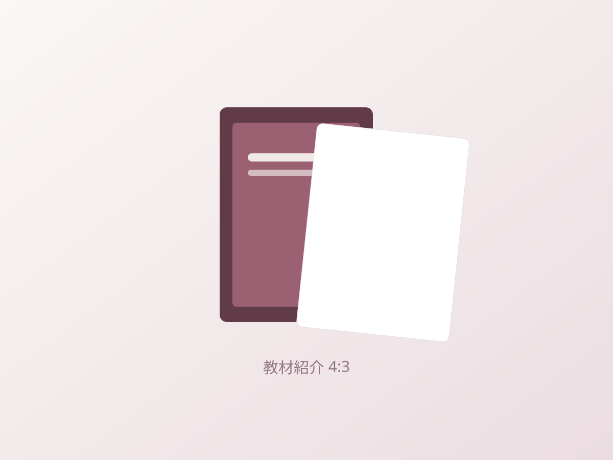
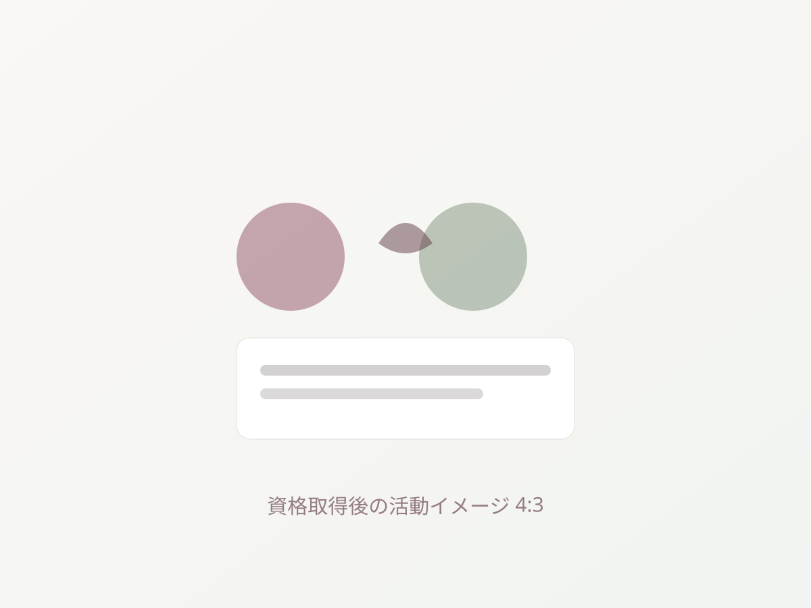

恋愛心理学の基礎
愛着、認知バイアス、自己理解、親密さなどを学びます。心理学は、人を決めつけたり、相手を操作したりするためには使いません。
心理学・傾聴・倫理を基礎から学び、相談者の気持ちと意思を尊重できる恋愛サポートアドバイザーへ。
本サイトは公開準備中です。料金・申込などの一部情報は確定後に掲載します。

恋愛テクニックではなく、安全に相談を受けるための基礎を学びます。

恋愛にまつわる心理を、人をタイプ分けしたり相手を操作したりするためではなく、自分と相手を理解し、誠実に関わるための手がかりとして学びます。
愛着、認知バイアス、自己理解、親密さなどを学びます。心理学は、人を決めつけたり、相手を操作したりするためには使いません。
傾聴、質問、目標設定、行動計画など、恋愛相談を安全に整理して進める基本を学びます。
守秘義務、診断の禁止、同意、DV、ストーカー、危機対応、専門機関への紹介について学びます。

恋愛の悩みを「なんとなく」ではなく、落ち着いて整理して受けとめたい——そんな方に向けた講座です。次のいずれかに当てはまる方におすすめします。
相談者の話を聴き、状況・感情・希望を整理し、本人が自分で選択できるよう支援するための民間資格です。相談者の代わりに答えを決めたり、相手を思いどおりに動かす方法を教えたりすることを目的としていません。
民間資格です。「公認心理師」「心理師」などの国家資格・医療資格・心理療法の専門家ではありません。診断・治療・心理療法を行う資格ではありません。
13章を4部に分けて、役割と責任から、心理の基礎、相談の実践、安全と専門性まで順に学びます。各部を開くと章の概要を確認できます。

「普通」を押しつけず、年代・性別・関係のかたちの違いを尊重します。第4部では、多様性・同意・DV・危機対応など、安全に関わるための知識を扱います。
恋愛サポートの目的と、相談者を守る倫理・守秘義務・境界線。
心理学を診断や固定的なタイプ分けに使わずに理解する。
聴き方・進め方・出会い・交際・別れの基本。
多様な価値観、同意、危機対応、活動の継続。

相手を動かす技術ではなく、
相談者を尊重する知識を。
全13章の公式テキストで、恋愛心理学、相談技法、倫理、安全な対応を順番に学びます。各章に、対応例、ケーススタディ、章末ワーク、確認問題を収録します。

全13章を収録した完成版PDFで、相談対応の基礎を順番に学べます。
申込フォームから必要事項を入力し、受講料をお支払いいただきます（現在準備中）。
お支払い確認後、公式テキストのPDFをご案内します。
自分のペースでテキストと章末ワークを進めます。標準学習時間は約6時間です。
総合80点以上に加え、重要領域では90%以上が必要です。
合格確認後、認定証を発行します（認定証の形式は準備中）。
知識を暗記するだけでなく、実際の相談場面で安全な判断ができるかを確認します。
重大な誤答がある場合は、不足していた領域を再学習したうえで再試験を受けられます。試験問題や正答はこのサイトには掲載しません。

本資格は、就職・収入・顧客獲得・恋愛上の成果を保証するものではありません。
講師の氏名、肩書き、経歴は確定後に掲載します。確定するまで、推測した情報は表示しません。
料金は公開準備中です。確定し次第、税込価格と内訳を掲載します。
受講料（税込）
支払方法：準備中
再試験料：準備中
年会費・更新料：なし
返金・キャンセル条件を申込前にご確認ください。
心理学・傾聴・倫理を基礎から学び、安全に相談を受けるための土台を身につけます。
恋愛サポートアドバイザーは民間資格です。医療資格・心理職国家資格ではありません。お申込みにあたっては利用規約・返金条件への同意をお願いする予定です。